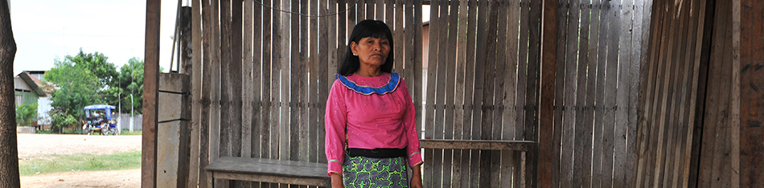
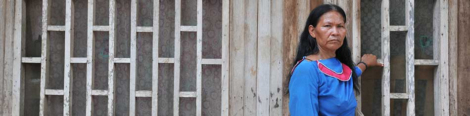

Numerosas víctimas de la comunidad shipiba de Ucayali fueron sometidas a las esterilizaciones sin que los enfermeros ni médicos, que no hablaban su lengua, les informaran del motivo de la operación. Las víctimas son de los distritos de Iparia y Masisea, a ocho horas de Pucallpa; de Padre Marquéz, a siete horas de la ciudad; y de Yarinacocha, distrito cercano a Pucallpa.


Dina Pangoa Vásquez
“A mí me han llevado, ellos son los culpables”
Juliana Lomas Cauper
“Apagaron la luz, prendieron una más pequeña, temblaba, no sabía que me hacían”